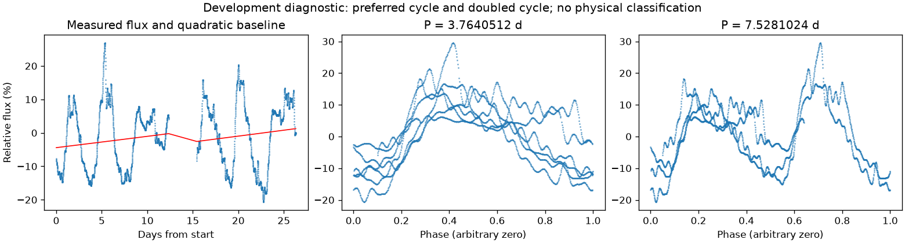
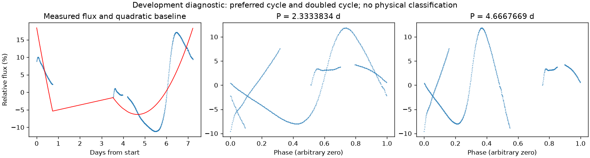

并非所有时段都支持重复变化
第二版周期：None 天；状态：not_established。

左图红线是缓慢基线；右面两图去除该基线。若未通过周期要求，两图只展示得分最高的竞争解释。
| 竞争周期（天） | 交替周期预测改善 | 两组各自改善 | 通过初筛 |
|---|---|---|---|
| 3.7640512 | 20.0% | -13.5% / 51.2% | 否 |
| 7.5198163 | 15.5% | 24.4% / -9.6% | 否 |
| 3.0589556 | 5.7% | 7.5% / 4.2% | 否 |
| 4.8267628 | -5.7% | -2.3% / -9.3% | 否 |
| 1.5234365 | -38.8% | -40.1% / -37.3% | 否 |
| 1.5277412 | -39.0% | -39.4% / -38.4% | 否 |
| 6.1394819 | -45.9% | -40.4% / -50.6% | 否 |
| 2.5138048 | -94.8% | -100.4% / -87.0% | 否 |
“预测改善”衡量用一组周期的形状预测另一组，比只有缓慢基线好多少；负数表示更差。搜索和预测共用了资料，因此这不是可信概率，也不是独立验证。
第二版周期：None 天；状态：not_established。

左图红线是缓慢基线；右面两图去除该基线。若未通过周期要求，两图只展示得分最高的竞争解释。
| 竞争周期（天） | 交替周期预测改善 | 两组各自改善 | 通过初筛 |
|---|---|---|---|
| 2.3333834 | 8.1% | 12.6% / -21.5% | 否 |
| 2.3028466 | -1.4% | 4.9% / -43.1% | 否 |
| 2.8421020 | -35.0% | 12.6% / -137.7% | 否 |
| 1.9023577 | -48.0% | -109.6% / -2.3% | 否 |
| 5.6035758 | -51.5% | -205.2% / 45.3% | 否 |
| 0.7846921 | -59.9% | -83.6% / -22.2% | 否 |
| 3.4595830 | -77.3% | -47.2% / -83.8% | 否 |
| 0.7430575 | -79.1% | -91.6% / -63.5% | 否 |
“预测改善”衡量用一组周期的形状预测另一组，比只有缓慢基线好多少；负数表示更差。搜索和预测共用了资料，因此这不是可信概率，也不是独立验证。